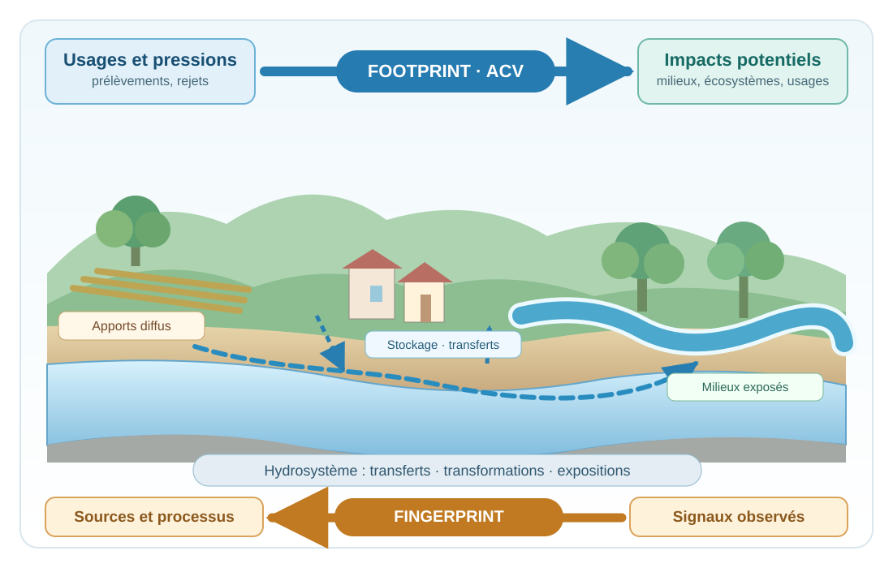

Transferts et connexions
Les écoulements de surface et souterrains déterminent où et quand une pression atteint un milieu récepteur.
L’empreinte eau vise à caractériser les conséquences des activités humaines sur les ressources et les milieux aquatiques. Mais un prélèvement ou un rejet ne suffit pas à définir un impact : celui-ci dépend de la façon dont l’hydrosystème transporte, stocke ou transforme les pressions. C’est ce lien entre activités, fonctionnement des milieux et effets que nous développons dans le PC4 du PEPR OneWater.
Les méthodes d’analyse du cycle de vie (ACV), notamment dans le cadre de la norme ISO 14046, permettent de dépasser les volumes prélevés ou consommés pour évaluer des impacts potentiels des usages de l’eau. Elles offrent des références communes pour comparer des produits, des activités et des territoires. Toutefois, les conséquences d’une même pression varient selon la saison, la disponibilité réelle de la ressource, les échanges nappe–rivière ou la sensibilité des écosystèmes.
L’enjeu n’est pas de remplacer les indicateurs existants, mais d’identifier les informations hydrologiques et environnementales qui changent réellement leur interprétation. La représentation doit être aussi générale que possible et aussi contextualisée que nécessaire.
Le footprint part des activités et de leurs pressions pour estimer des impacts potentiels ou contextualisés. Le fingerprint part des signatures observées dans les milieux — traceurs, contaminants, signaux chimiques et biologiques — pour décrire leur état et éclairer les processus et les sources qui l’ont façonné.
Ces deux lectures se rejoignent dans le fonctionnement de l’hydrosystème : sources → transferts et transformations → expositions → effets. Les observations confrontées aux modèles permettent de rapprocher les impacts évalués des effets effectivement mesurés, sans les confondre.

Les écoulements de surface et souterrains déterminent où et quand une pression atteint un milieu récepteur.
Les temps de transfert peuvent décaler de plusieurs années la réponse du système à une modification des usages.
Réactions biogéochimiques, dilution, biodisponibilité et sensibilité du vivant modulent les expositions et leurs conséquences.
Le PC4 « Empreinte Eau & Eau Sentinelle » du PEPR OneWater – Eau Bien Commun articule les cadres d’empreinte eau et d’ACV avec des indicateurs sentinelles, les observations et les modèles des socio-hydrosystèmes. Il vise des évaluations interprétables à l’échelle des territoires et utiles aux acteurs de l’eau.
Coordination scientifique du PC4 : Jean-Raynald de Dreuzy et Hélène Budzinski (Université de Bordeaux).
Co-animation du Défi 2 « Empreinte eau » : Jean-Raynald de Dreuzy et Hélène Fenet (Université de Montpellier).

Je travaille plus particulièrement sur le rôle des écoulements, des temps de résidence et des échanges entre compartiments dans la transformation des pressions. L’objectif est de relier observations et modèles hydro(géo)logiques aux indicateurs d’empreinte eau, tout en précisant ce qui peut être transféré d’un bassin versant à un autre.